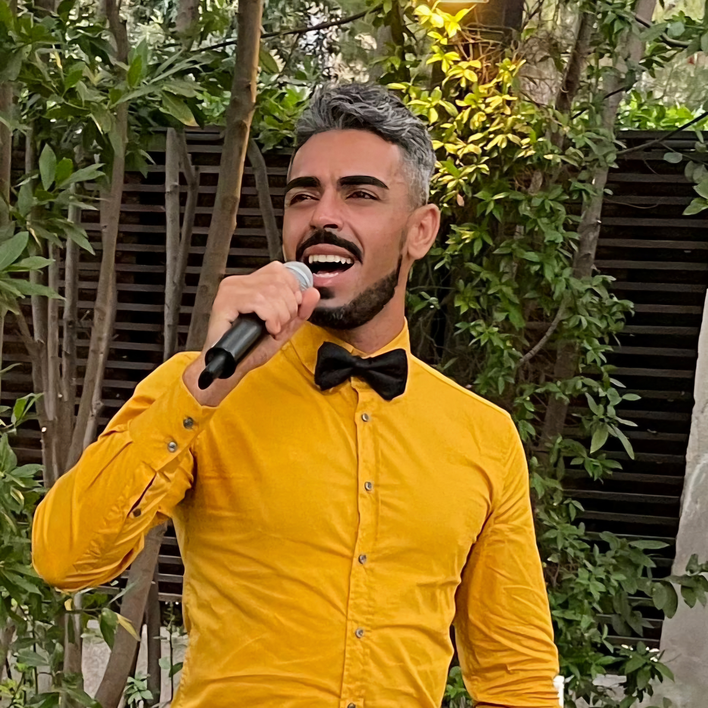
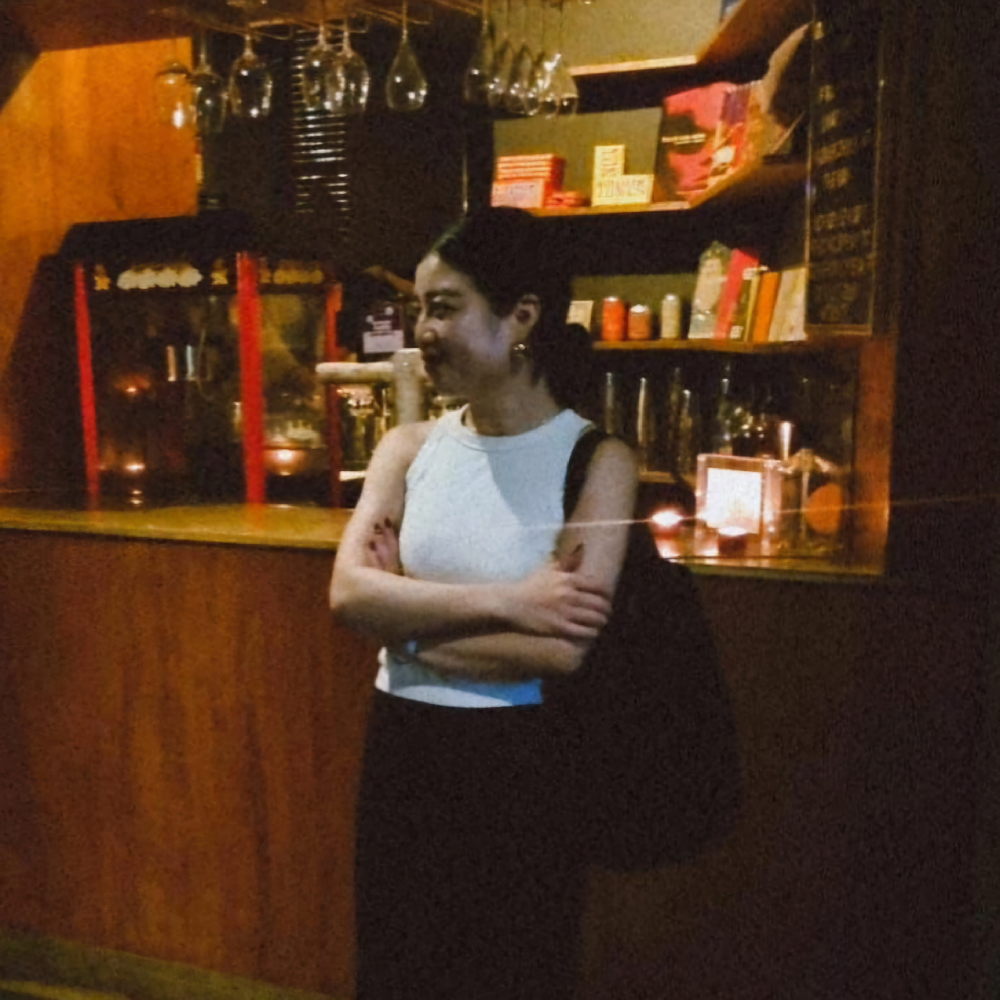

About No Way Band
The No Way Band was formed in 2024 with a shared love for music and creativity, as well as, being colleagues in the same hotel. Dedicated to creating unique covers of popular songs and bringing their personal style to each track, the band aims to resonate with audiences worldwide. Their video performances are packed with energy, passion, and unforgettable moments.
Meet the Band

Antonio Maestro
Lead vocalist and lyricist, bringing life to every performance with his dynamic stage presence.
Joey
Guitarist, weaving melodies that resonate deeply with the audience.

Kei-san
Pianist extraordinaire, creating grooves that anchor every song's rhythm.

Matteo Mysterio
Drummer and backbone of the band, driving the beats that energize the crowd.